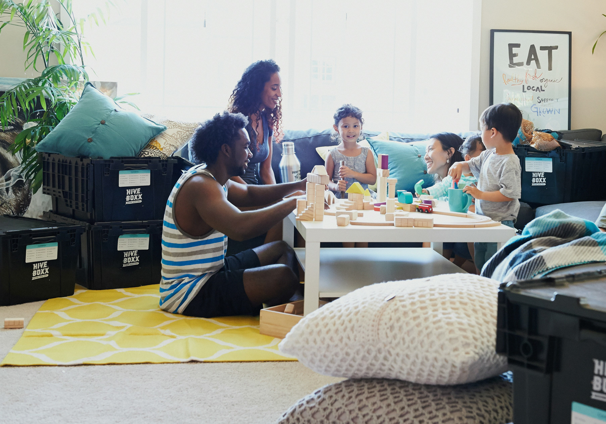

Parce que chaque enfant mérite un endroit pour grandir en sécurité
L'Espoir asbl accompagne des enfants et des jeunes en difficulté dans la région de Huy, à travers trois services agréés depuis 1985.
On croit que chaque jeune, même dans les situations les plus difficiles, peut trouver sa voie. Notre rôle, c'est de le croire assez fort pour l'aider à y croire aussi.
L'Équipe de L'Espoir asbl
Trois services, une mission
SRG
Service Résidentiel Général
Des enfants de 3 à 18 ans qui ne peuvent pas rester chez eux trouvent ici un foyer stable. Trois maisons à Amay et Couthuin.
En savoir plus arrow_forwardSASE
Service d'Accompagnement Socio-Éducatif
Nos éducateurs viennent chez les familles pour les aider à tenir le quotidien. 13 familles maximum accompagnées simultanément dans l'arrondissement de Huy.
En savoir plus arrow_forwardSAPA
Service d'Accompagnement du Parrainage
On met en relation des jeunes avec des familles bénévoles prêtes à s'engager dans la durée. Actif depuis 2022 dans les zones de Huy, Waremme et Hannut.
En savoir plus arrow_forwardPlus de 40 ans au service de la jeunesse à Huy
Fondée en 1985 suite à la fermeture du home d'enfants de la Maison-Dieu à Antheit, L'Espoir asbl perpétue depuis plus de 40 ans une mission d'accueil et d'accompagnement des jeunes en difficulté.
Agréée et subsidiée par la Fédération Wallonie-Bruxelles, nos équipes travaillent quotidiennement avec les familles, les services mandataires et les partenaires de la région.
Notre histoire complète arrow_forwardActualités

Lancement du potager communautaire au cœur de Huy
Un nouvel espace de partage et d'apprentissage pour nos jeunes résidents.
arrow_forward
Portes ouvertes, venez découvrir nos services
12 Mai 2026
arrow_forward
Ateliers créatifs, programme printemps 2026
28 Avril 2026
arrow_forwardL'asbl recrute un éducateur spécialisé.
Nos partenaires institutionnels & locaux
Wallonie-Bruxelles
de Liège
de Huy
Aide à la Jeunesse
Arc-en-Ciel
Roi Baudouin
Envie de nous rejoindre ? Contactez-nous
Soutenez nos actions, changez des vies.
Sans vos dons, il nous serait impossible d'offrir aux enfants l'infrastructure qu'ils méritent. Chaque contribution finance des projets pédagogiques, des sorties culturelles et l'amélioration de nos maisons.
Dons ≥ 40 € déductibles fiscalement · Via le Service Arc-en-Ciel · IBAN BE41 6300 1180 0010